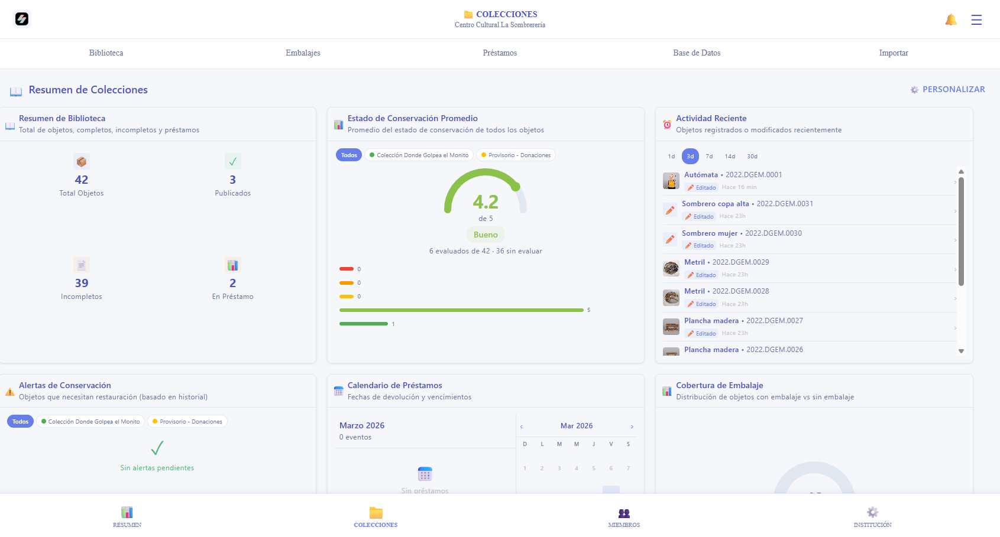
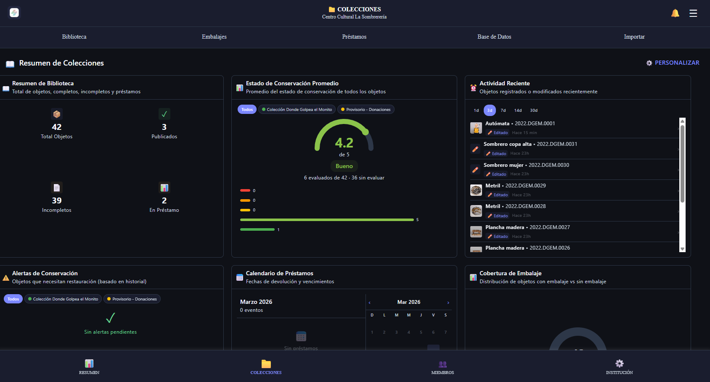
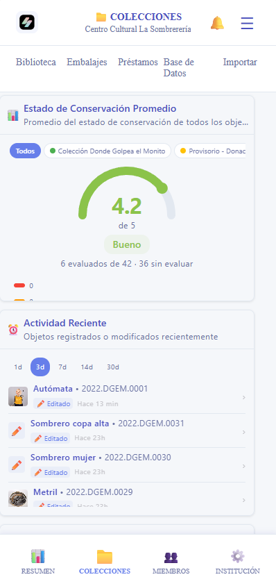
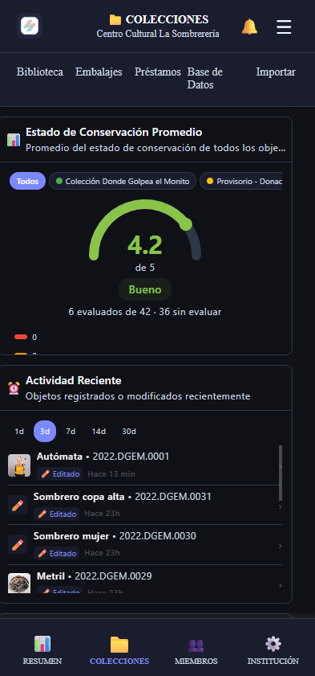

Registro de colecciones
Formularios especializados que unifican metodologías y facilitan el levantamiento de información. Cada objeto, catalogado con estándar museográfico desde el primer ingreso.
Plataforma de registro, análisis y conservación patrimonial
Servare nació en el desierto de Atacama, después de años documentando patrimonio con métodos manuales. Sabemos lo que duele perder información. Por eso creamos la herramienta que siempre necesitamos.
El 40% del trabajo de campo se convierte en transcripción manual.
Los datos se capturan digitalmente en terreno, sin dobles tareas. Lo que registras en campo queda directamente en la plataforma.
Cuadernos, fotos sueltas, Excel, Word. Imposible de buscar o compartir.
Todo centralizado en una plataforma, con buscador avanzado y acceso multiusuario. Desde cualquier dispositivo, en cualquier lugar.
Cada profesional registra distinto. No hay metodología compartida.
Formularios inteligentes que unifican criterios y garantizan consistencia entre todos los profesionales del equipo.
Hoy, instituciones patrimoniales de todo Chile usan Servare para registrar, analizar y conservar sus colecciones de forma digital.
Únete a la transformaciónDesde el ingreso del objeto hasta su préstamo internacional — cada proceso de conservación conectado, trazado y disponible en tiempo real.
Formularios especializados que unifican metodologías y facilitan el levantamiento de información. Cada objeto, catalogado con estándar museográfico desde el primer ingreso.
Control de movimientos, intervenciones y ubicaciones con historial actualizado y tracking por código. Siempre sabes dónde está cada pieza y qué le ha ocurrido.
Integra fotos históricas, actuales y de intervenciones, todo asociado al objeto.
Caracterización de espacios, KPIs ambientales y monitoreo de condiciones.
Evaluación automática de factores de riesgo por sala, con alertas y recomendaciones de mitigación.
Sistema integrado con Facility Reports, Condition Reports y seguimiento de obras en tránsito.
Planes de mantenimiento, calendarización de tareas y alertas tempranas para vitrinas, salas y objetos.
Informes de condition reports con análisis de patologías y evolución en el tiempo.
Integra fotos históricas, actuales y de intervenciones, con visualización cronológica.
Gestión de materiales, protocolos de embalaje y logística para traslados seguros.
Informes detallados con análisis de patologías y condition reports exportables en PDF.




Cada función fue diseñada por restauradores, para restauradores. Sin concesiones técnicas, sin procesos que no existan en campo.
Campos dinámicos con validación en tiempo real. Registro estandarizado para cualquier tipo de patrimonio, adaptativo a cada objeto.
GPS preciso sin conexión, mapas interactivos y coordenadas en múltiples formatos. Ideal para zonas remotas.
Fotos, video y audio con compresión automática. Galería organizada por objeto, con historial de intervenciones.
Análisis automático de deterioros, detección de patologías y generación de informes predictivos.
Sin señal no es problema. Todo se sincroniza automáticamente cuando vuelves a conectarte.
Encriptación de extremo a extremo, roles por institución y respaldos automáticos en la nube.

Nacimos en el desierto de Atacama documentando patrimonio con métodos manuales. Hoy, nuestra solución digital es la más innovadora del país.
Servare está en beta cerrada para instituciones patrimoniales de Chile y Latinoamérica
Solicitar AccesoHablemos sobre tu institución